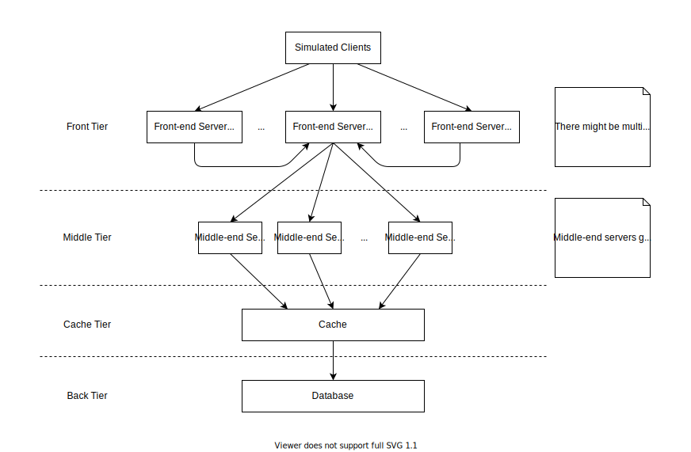

If you have ever get along with AWS EC2, you must know that the most critical feature it provides is load balancing, which is capable of automatically killing or launching machines (or VMs) according to the real-time metrics (e.g., CPU utilization). In this project, we also wanted to do something similar.
We implemented a distributed web server which can emulated online shopping (browse buy). The system consists of multiple tiers, and is able to scale in or out accordingly, depending on the current QPS.
Please note that it is a small project, and there is, in fact, no any real shopping applications, we as want to mainly pay attention to design and implementation of scalability and system hisrarchy.
System Hierarchy
Refer to the picture below for the syste, hierarchy:

Front-end Server
The responsibility of front-end servers is to receive requests (but not process them). Thus, there should be something like “request pool” to store all requests. Who should be reponsible for maintaining this “pool”? In order to do that, we also divided all front-end servers into 2 categories:
Master
The master front-end server is supposed to maintain a central queue which has all requests received by front-end servers. Please note, the master server itself will also receive reqeusts, just like slave servers (explain below). There is only and at least one master in our system. Another critical feature for master server is that it also takes charges of scaling in/out, according to the length of central queue.
Slave
Slave front-end servers have less workload compared to the master. It will only receive requests and push them into the central queue on master front-end servers. There might be multiple slave masters.
Middle-end Server
[TODO]